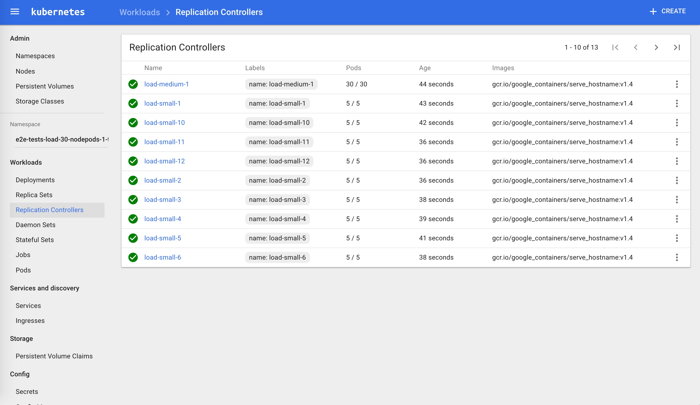
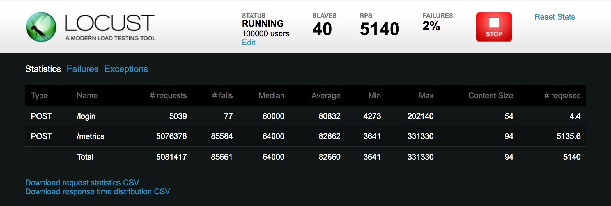

Kubernetes网络和集群性能测试
准备
测试环境
在以下几种环境下进行测试：
- Kubernetes集群node节点上通过Cluster IP方式访问
- Kubernetes集群内部通过service访问
- Kubernetes集群外部通过traefik ingress暴露的地址访问
测试地址
Cluster IP: 10.254.149.31
Service Port：8000
Ingress Host：traefik.sample-webapp.io
测试工具
- Locust：一个简单易用的用户负载测试工具，用来测试web或其他系统能够同时处理的并发用户数。
- curl
- kubemark
- 测试程序：sample-webapp，源码见Github kubernetes的分布式负载测试
测试说明
通过向sample-webapp发送curl请求获取响应时间，直接curl后的结果为：
$ curl "http://10.254.149.31:8000/"
Welcome to the "Distributed Load Testing Using Kubernetes" sample web app
网络延迟测试
场景一、 Kubernetes集群node节点上通过Cluster IP访问
测试命令
curl -o /dev/null -s -w '%{time_connect} %{time_starttransfer} %{time_total}' "http://10.254.149.31:8000/"
10组测试结果
| No | time_connect | time_starttransfer | time_total |
|---|---|---|---|
| 1 | 0.000 | 0.003 | 0.003 |
| 2 | 0.000 | 0.002 | 0.002 |
| 3 | 0.000 | 0.002 | 0.002 |
| 4 | 0.000 | 0.002 | 0.002 |
| 5 | 0.000 | 0.002 | 0.002 |
| 6 | 0.000 | 0.002 | 0.002 |
| 7 | 0.000 | 0.002 | 0.002 |
| 8 | 0.000 | 0.002 | 0.002 |
| 9 | 0.000 | 0.002 | 0.002 |
| 10 | 0.000 | 0.002 | 0.002 |
平均响应时间：2ms
时间指标说明
单位：秒
time_connect：建立到服务器的 TCP 连接所用的时间
time_starttransfer：在发出请求之后，Web 服务器返回数据的第一个字节所用的时间
time_total：完成请求所用的时间
场景二、Kubernetes集群内部通过service访问
测试命令
curl -o /dev/null -s -w '%{time_connect} %{time_starttransfer} %{time_total}' "http://sample-webapp:8000/"
10组测试结果
| No | time_connect | time_starttransfer | time_total |
|---|---|---|---|
| 1 | 0.004 | 0.006 | 0.006 |
| 2 | 0.004 | 0.006 | 0.006 |
| 3 | 0.004 | 0.006 | 0.006 |
| 4 | 0.004 | 0.006 | 0.006 |
| 5 | 0.004 | 0.006 | 0.006 |
| 6 | 0.004 | 0.006 | 0.006 |
| 7 | 0.004 | 0.006 | 0.006 |
| 8 | 0.004 | 0.006 | 0.006 |
| 9 | 0.004 | 0.006 | 0.006 |
| 10 | 0.004 | 0.006 | 0.006 |
平均响应时间：6ms
场景三、在公网上通过traefik ingress访问
测试命令
curl -o /dev/null -s -w '%{time_connect} %{time_starttransfer} %{time_total}' "http://traefik.sample-webapp.io" >>result
10组测试结果
| No | time_connect | time_starttransfer | time_total |
|---|---|---|---|
| 1 | 0.043 | 0.085 | 0.085 |
| 2 | 0.052 | 0.093 | 0.093 |
| 3 | 0.043 | 0.082 | 0.082 |
| 4 | 0.051 | 0.093 | 0.093 |
| 5 | 0.068 | 0.188 | 0.188 |
| 6 | 0.049 | 0.089 | 0.089 |
| 7 | 0.051 | 0.113 | 0.113 |
| 8 | 0.055 | 0.120 | 0.120 |
| 9 | 0.065 | 0.126 | 0.127 |
| 10 | 0.050 | 0.111 | 0.111 |
平均响应时间：110ms
测试结果
在这三种场景下的响应时间测试结果如下：
- Kubernetes集群node节点上通过Cluster IP方式访问：2ms
- Kubernetes集群内部通过service访问：6ms
- Kubernetes集群外部通过traefik ingress暴露的地址访问：110ms
注意：执行测试的node节点/Pod与serivce所在的pod的距离（是否在同一台主机上），对前两个场景可以能会有一定影响。
网络性能测试
网络使用flannel的vxlan模式。
使用iperf进行测试。
服务端命令：
iperf -s -p 12345 -i 1 -M
客户端命令：
iperf -c ${server-ip} -p 12345 -i 1 -t 10 -w 20K
场景一、主机之间
[ ID] Interval Transfer Bandwidth
[ 3] 0.0- 1.0 sec 598 MBytes 5.02 Gbits/sec
[ 3] 1.0- 2.0 sec 637 MBytes 5.35 Gbits/sec
[ 3] 2.0- 3.0 sec 664 MBytes 5.57 Gbits/sec
[ 3] 3.0- 4.0 sec 657 MBytes 5.51 Gbits/sec
[ 3] 4.0- 5.0 sec 641 MBytes 5.38 Gbits/sec
[ 3] 5.0- 6.0 sec 639 MBytes 5.36 Gbits/sec
[ 3] 6.0- 7.0 sec 628 MBytes 5.26 Gbits/sec
[ 3] 7.0- 8.0 sec 649 MBytes 5.44 Gbits/sec
[ 3] 8.0- 9.0 sec 638 MBytes 5.35 Gbits/sec
[ 3] 9.0-10.0 sec 652 MBytes 5.47 Gbits/sec
[ 3] 0.0-10.0 sec 6.25 GBytes 5.37 Gbits/sec
场景二、不同主机的Pod之间(使用flannel的vxlan模式)
[ ID] Interval Transfer Bandwidth
[ 3] 0.0- 1.0 sec 372 MBytes 3.12 Gbits/sec
[ 3] 1.0- 2.0 sec 345 MBytes 2.89 Gbits/sec
[ 3] 2.0- 3.0 sec 361 MBytes 3.03 Gbits/sec
[ 3] 3.0- 4.0 sec 397 MBytes 3.33 Gbits/sec
[ 3] 4.0- 5.0 sec 405 MBytes 3.40 Gbits/sec
[ 3] 5.0- 6.0 sec 410 MBytes 3.44 Gbits/sec
[ 3] 6.0- 7.0 sec 404 MBytes 3.39 Gbits/sec
[ 3] 7.0- 8.0 sec 408 MBytes 3.42 Gbits/sec
[ 3] 8.0- 9.0 sec 451 MBytes 3.78 Gbits/sec
[ 3] 9.0-10.0 sec 387 MBytes 3.25 Gbits/sec
[ 3] 0.0-10.0 sec 3.85 GBytes 3.30 Gbits/sec
场景三、Node与非同主机的Pod之间（使用flannel的vxlan模式）
[ ID] Interval Transfer Bandwidth
[ 3] 0.0- 1.0 sec 372 MBytes 3.12 Gbits/sec
[ 3] 1.0- 2.0 sec 420 MBytes 3.53 Gbits/sec
[ 3] 2.0- 3.0 sec 434 MBytes 3.64 Gbits/sec
[ 3] 3.0- 4.0 sec 409 MBytes 3.43 Gbits/sec
[ 3] 4.0- 5.0 sec 382 MBytes 3.21 Gbits/sec
[ 3] 5.0- 6.0 sec 408 MBytes 3.42 Gbits/sec
[ 3] 6.0- 7.0 sec 403 MBytes 3.38 Gbits/sec
[ 3] 7.0- 8.0 sec 423 MBytes 3.55 Gbits/sec
[ 3] 8.0- 9.0 sec 376 MBytes 3.15 Gbits/sec
[ 3] 9.0-10.0 sec 451 MBytes 3.78 Gbits/sec
[ 3] 0.0-10.0 sec 3.98 GBytes 3.42 Gbits/sec
场景四、不同主机的Pod之间（使用flannel的host-gw模式）
[ ID] Interval Transfer Bandwidth
[ 5] 0.0- 1.0 sec 530 MBytes 4.45 Gbits/sec
[ 5] 1.0- 2.0 sec 576 MBytes 4.84 Gbits/sec
[ 5] 2.0- 3.0 sec 631 MBytes 5.29 Gbits/sec
[ 5] 3.0- 4.0 sec 580 MBytes 4.87 Gbits/sec
[ 5] 4.0- 5.0 sec 627 MBytes 5.26 Gbits/sec
[ 5] 5.0- 6.0 sec 578 MBytes 4.85 Gbits/sec
[ 5] 6.0- 7.0 sec 584 MBytes 4.90 Gbits/sec
[ 5] 7.0- 8.0 sec 571 MBytes 4.79 Gbits/sec
[ 5] 8.0- 9.0 sec 564 MBytes 4.73 Gbits/sec
[ 5] 9.0-10.0 sec 572 MBytes 4.80 Gbits/sec
[ 5] 0.0-10.0 sec 5.68 GBytes 4.88 Gbits/sec
场景五、Node与非同主机的Pod之间（使用flannel的host-gw模式）
[ ID] Interval Transfer Bandwidth
[ 3] 0.0- 1.0 sec 570 MBytes 4.78 Gbits/sec
[ 3] 1.0- 2.0 sec 552 MBytes 4.63 Gbits/sec
[ 3] 2.0- 3.0 sec 598 MBytes 5.02 Gbits/sec
[ 3] 3.0- 4.0 sec 580 MBytes 4.87 Gbits/sec
[ 3] 4.0- 5.0 sec 590 MBytes 4.95 Gbits/sec
[ 3] 5.0- 6.0 sec 594 MBytes 4.98 Gbits/sec
[ 3] 6.0- 7.0 sec 598 MBytes 5.02 Gbits/sec
[ 3] 7.0- 8.0 sec 606 MBytes 5.08 Gbits/sec
[ 3] 8.0- 9.0 sec 596 MBytes 5.00 Gbits/sec
[ 3] 9.0-10.0 sec 604 MBytes 5.07 Gbits/sec
[ 3] 0.0-10.0 sec 5.75 GBytes 4.94 Gbits/sec
网络性能对比综述
使用Flannel的vxlan模式实现每个pod一个IP的方式，会比宿主机直接互联的网络性能损耗30%～40%，符合网上流传的测试结论。而flannel的host-gw模式比起宿主机互连的网络性能损耗大约是10%。
Vxlan会有一个封包解包的过程，所以会对网络性能造成较大的损耗，而host-gw模式是直接使用路由信息，网络损耗小。
Kubernete的性能测试
参考Kubernetes集群性能测试中的步骤，对kubernetes的性能进行测试。
我的集群版本是Kubernetes1.6.0，首先克隆代码，将kubernetes目录复制到$GOPATH/src/k8s.io/下然后执行：
$ ./hack/generate-bindata.sh
/usr/local/src/k8s.io/kubernetes /usr/local/src/k8s.io/kubernetes
Generated bindata file : test/e2e/generated/bindata.go has 13498 test/e2e/generated/bindata.go lines of lovely automated artifacts
No changes in generated bindata file: pkg/generated/bindata.go
/usr/local/src/k8s.io/kubernetes
$ make WHAT="test/e2e/e2e.test"
...
+++ [0425 17:01:34] Generating bindata:
test/e2e/generated/gobindata_util.go
/usr/local/src/k8s.io/kubernetes /usr/local/src/k8s.io/kubernetes/test/e2e/generated
/usr/local/src/k8s.io/kubernetes/test/e2e/generated
+++ [0425 17:01:34] Building go targets for linux/amd64:
test/e2e/e2e.test
$ make ginkgo
+++ [0425 17:05:57] Building the toolchain targets:
k8s.io/kubernetes/hack/cmd/teststale
k8s.io/kubernetes/vendor/github.com/jteeuwen/go-bindata/go-bindata
+++ [0425 17:05:57] Generating bindata:
test/e2e/generated/gobindata_util.go
/usr/local/src/k8s.io/kubernetes /usr/local/src/k8s.io/kubernetes/test/e2e/generated
/usr/local/src/k8s.io/kubernetes/test/e2e/generated
+++ [0425 17:05:58] Building go targets for linux/amd64:
vendor/github.com/onsi/ginkgo/ginkgo
$ export KUBERNETES_PROVIDER=local
$ export KUBECTL_PATH=/usr/bin/kubectl
$ go run hack/e2e.go -v -test --test_args="--host=http://172.20.0.113:8080 --ginkgo.focus=\[Feature:Performance\]" >>log.txt
测试结果
Apr 25 18:27:31.461: INFO: API calls latencies: {
"apicalls": [
{
"resource": "pods",
"verb": "POST",
"latency": {
"Perc50": 2148000,
"Perc90": 13772000,
"Perc99": 14436000,
"Perc100": 0
}
},
{
"resource": "services",
"verb": "DELETE",
"latency": {
"Perc50": 9843000,
"Perc90": 11226000,
"Perc99": 12391000,
"Perc100": 0
}
},
...
Apr 25 18:27:31.461: INFO: [Result:Performance] {
"version": "v1",
"dataItems": [
{
"data": {
"Perc50": 2.148,
"Perc90": 13.772,
"Perc99": 14.436
},
"unit": "ms",
"labels": {
"Resource": "pods",
"Verb": "POST"
}
},
...
2.857: INFO: Running AfterSuite actions on all node
Apr 26 10:35:32.857: INFO: Running AfterSuite actions on node 1
Ran 2 of 606 Specs in 268.371 seconds
SUCCESS! -- 2 Passed | 0 Failed | 0 Pending | 604 Skipped PASS
Ginkgo ran 1 suite in 4m28.667870101s
Test Suite Passed
从kubemark输出的日志中可以看到API calls latencies和Performance。
日志里显示，创建90个pod用时40秒以内，平均创建每个pod耗时0.44秒。
不同type的资源类型API请求耗时分布
| Resource | Verb | 50% | 90% | 99% |
|---|---|---|---|---|
| services | DELETE | 8.472ms | 9.841ms | 38.226ms |
| endpoints | PUT | 1.641ms | 3.161ms | 30.715ms |
| endpoints | GET | 931µs | 10.412ms | 27.97ms |
| nodes | PATCH | 4.245ms | 11.117ms | 18.63ms |
| pods | PUT | 2.193ms | 2.619ms | 17.285ms |
从log.txt日志中还可以看到更多详细请求的测试指标。

注意事项
测试过程中需要用到docker镜像存储在GCE中，需要翻墙下载，我没看到哪里配置这个镜像的地址。该镜像副本已上传时速云：
用到的镜像有如下两个：
- gcr.io/google_containers/pause-amd64:3.0
- gcr.io/google_containers/serve_hostname:v1.4
Locust测试
请求统计
| Method | Name | # requests | # failures | Median response time | Average response time | Min response time | Max response time | Average Content Size | Requests/s |
|---|---|---|---|---|---|---|---|---|---|
| POST | /login | 5070 | 78 | 59000 | 80551 | 11218 | 202140 | 54 | 1.17 |
| POST | /metrics | 5114232 | 85879 | 63000 | 82280 | 29518 | 331330 | 94 | 1178.77 |
| None | Total | 5119302 | 85957 | 63000 | 82279 | 11218 | 331330 | 94 | 1179.94 |
响应时间分布
| Name | # requests | 50% | 66% | 75% | 80% | 90% | 95% | 98% | 99% | 100% |
|---|---|---|---|---|---|---|---|---|---|---|
| POST /login | 5070 | 59000 | 125000 | 140000 | 148000 | 160000 | 166000 | 174000 | 176000 | 202140 |
| POST /metrics | 5114993 | 63000 | 127000 | 142000 | 149000 | 160000 | 166000 | 172000 | 176000 | 331330 |
| None Total | 5120063 | 63000 | 127000 | 142000 | 149000 | 160000 | 166000 | 172000 | 176000 | 331330 |
以上两个表格都是瞬时值。请求失败率在2%左右。
Sample-webapp起了48个pod。
Locust模拟10万用户，每秒增长100个。

关于Locust的使用请参考Github：https://github.com/rootsongjc/distributed-load-testing-using-kubernetes